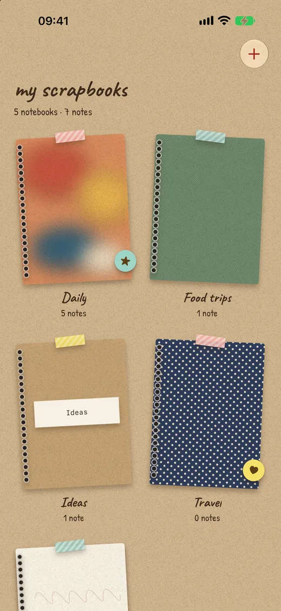
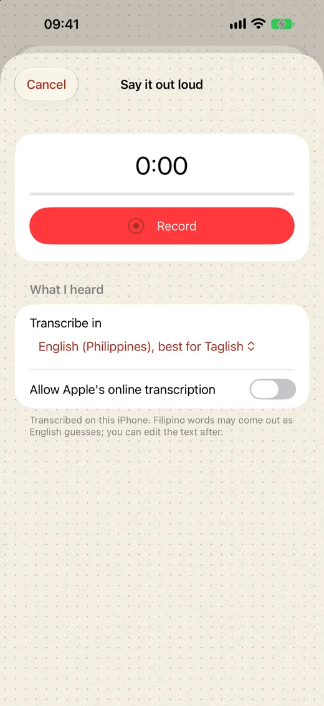

How we built Alaala, a private offline journal app, when Apple had no Filipino speech recognizer
What Alaala is
Alaala is the Filipino word for memory. The app is a private journal for your iPhone. You make a notebook, give it a cover, and fill it with notes: a few lines of text, up to 10 photos, or your own voice, which Alaala turns into text you can edit. Notes are grouped into a page for each day. Everything stays on the phone. There is no account, no server, no ads and no tracking, and it works with no internet.
The idea began on 2026-10-28 when I sent Venice a screenshot of a journaling app I liked and said, in Taglish, to start building it and use its own judgment. We took the core idea of notebooks, day pages and mixed-media notes, and nothing else: not the name, art, copy or layout. Venice, our AI operator, wrote the spec and the first version. Alaala is free, and version 1.0 is on the App Store.


The brief that could not be met
The brief said to support voice notes in two languages, Filipino and US English. It sounded like a settings entry: pick a locale, call the speech framework. For an app made for people in the Philippines, Filipino was the point.
Venice checked before writing any code. On the same day, on macOS 26.6 and on the iOS 26.5 simulator, it asked Apple's speech recognizer which languages it supports. The list had 63 locales and none was Filipino or Tagalog. Asking for the fil-PH recognizer returned nothing. The two newer speech tools in iOS 26, one with 30 languages and one with 54, listed no Filipino either, though we probed those on the Mac only.
English as spoken in the Philippines, en-PH, is supported, and it reported on-device support.
What we tried first, and why it did not hold
The first reading was that we had asked wrongly. So the probe became a unit test, run on two platforms, and it printed the same answer. That was the end of the fil-PH plan with Apple's tools. A real Filipino transcript would need a speech model we run on the phone ourselves, which is a project of its own, and it is still an open question in the spec.
There was a second wobble. On a freshly created simulator, the first run said on-device recognition was false for English. A later run on the same simulator said true. Reading the first result would have shown a wrong note on the record screen saying it was not available on the iPhone. We now read the probe from a second run and treat a real iPhone as the only proof.
The real fix
Alaala's default is English (Philippines), done on the iPhone itself. It is the closest model Apple ships to how I talk: Philippine-accented English with Filipino names and places. English (US) is the second choice. Filipino appears in the picker only if the device reports it as supported, so if Apple adds a Filipino recognizer in a future iOS, it lights up with no code change.
We also say it on the screen, in plain words, under the transcript: transcribed on this iPhone, and Filipino words may come out as English guesses, so you can edit the text. The transcript is always editable. An app should not hide the thing it cannot do. The voice note screen in the picture above carries that exact note.
Two more times the tests were right and we were wrong
On 2026-11-08 I hit a bug myself: quick Save dropped photos I had picked, because Save ran before the photos had finished loading. Venice made Save wait with a message while photos come in, decoded them off the main thread, and made Cancel stop an import and delete what it wrote. The test for it fails with the old bug planted on purpose and passes now, and a note keeps up to 10 photos.
The same day, the handwritten Caveat font seemed to cut off the last letter of a notebook name, and the word Travel looked clipped on its cover. Before changing anything, Venice drew the word with Apple's text engine outside the app. The l in Travel was never clipped, because that font draws it as a plain slanted stroke. But slanted last letters were being cut, so we added a hair-width space after names and a little padding. The rule we kept: render the word on its own before fixing a letter that only looks cut.
The check that guards it now
The speech probe lives in the unit tests and prints what each language supports on whatever device runs it, so a changed list in a future iOS shows up in our own output. The photo test fails when the old bug is put back. The cover text is drawn so Apple's Dynamic Type audit can pass at the largest text sizes, and the audit runs light and dark as part of every build.
What we would do differently
We would probe the platform before writing the brief, not after. A brief that asks for something the platform does not have wastes time even when the answer arrives on the first day.
We would also ship the honest note from the beginning. A transcript with a plain line of text about what it cannot do is better than one that quietly gets Tagalog wrong. Version 1.1, with a Home Screen widget for your latest note and a Lock Screen shortcut to write one, was waiting for App Review as of 2026-11-27.
Try it
Alaala: Private Journal is on the App Store: https://apps.apple.com/app/id6831549419
Want a system like this built for your business? JTL Growth builds AI and automation systems from Metro Manila. Book a free call, or look at the two-day founder workshop.
Book a callSee the workshop